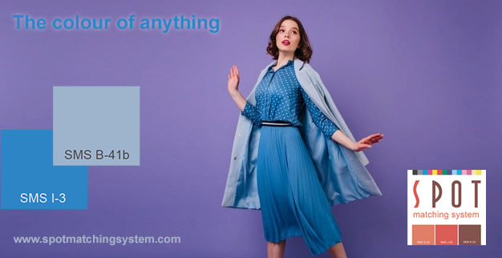

Shop SMS
SMS Technical
SMS products & services
SMS in articles and webinars
Testimonies
SMS and the environment SMS news Interesting links SMS: How, why and when SMS Q&A
SMS for design and
advertising Getting started with SMS colours Cost of ownership |
SMS for print Printers (in all categories) SMS READY - or not? |
|
How to create and use the SMS
READY control strip to ensure your CMYK colours are
correct (December 2025)
How to use the bitmap method for
demanding SMS jobs where there is no room for
error (December 2025)
How to mix and use your own
custom SMS colours using your SMS colour
palette.
Fogra Colour Management Café #46 Case example: The difference between using the Pantone Matching System and the Spot Matching System for design and marketing.
|
Comparison of the Pantone Matching System and the Spot Matching System. by Mr. Daniel Boaglio, SMS READY Expert #1, PHD in Physical Chemistry, Technical Advisor for flexible packaging from design to print.
An article by Mr. Daniel Boaglio, July 2024.

by Debbie McKeegan, CEO Texintel, March 2022
 |
|
- nbs